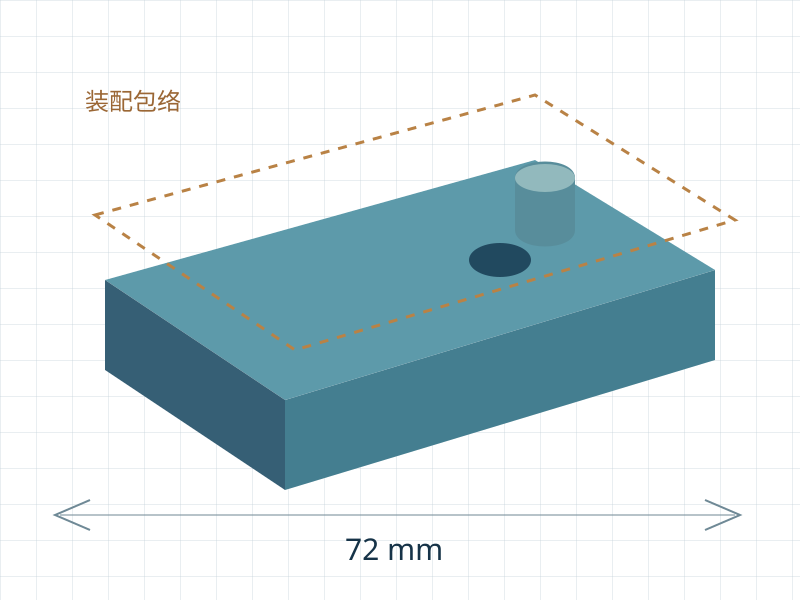
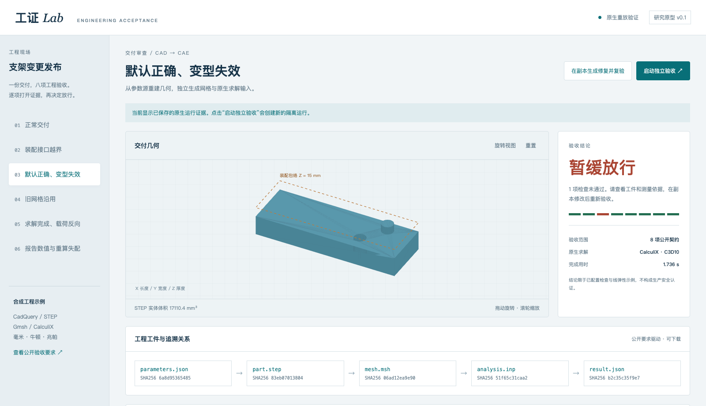

工证 Lab
面向 CAD/CAE 智能体的 工程验证与回归测试平台
让每一次工程修改，都留下可复查的证据。

AI＋工业软件赛道 · 自主选题
开源研究原型 v0.1.0 · 2026 年 10 月
全部演示输入为自行构造的合成工程。
工证 Lab
让每一次工程修改，都留下可复查的证据。

AI＋工业软件赛道 · 自主选题
开源研究原型 v0.1.0 · 2026 年 10 月
全部演示输入为自行构造的合成工程。
01 · 项目与问题
CAD/CAE 智能体会同时生成参数源、几何、网格、求解输入、结果和报告。各文件都能打开，仍可能存在几何更新后沿用旧网格、名义尺寸正确但变型失败、工况方向错误、报告引用旧数值等问题。
工证 Lab 面向工业 Agent 开发者、工业软件研发与测试团队，把交付验收组织为可重复执行的工程检查。当前原型使用开源 CAD/CAE 工具链，以受限参数支架模型展示从模型提案到原生重算的完整流程。
| 已有能力 | 本项目关注的补充 |
|---|---|
| CAD 几何检查 | 连接参数、STEP、变型与装配要求 |
| CAE 求解成功 | 复核工况、输入来源与报告一致性 |
| Agent 任务打分 | 保留可重放原生工件和逐项测量 |
这些能力并非全部首创。当前实现的价值在于将它们组织为面向智能体交付的公开契约与回归流程；尚无系统性竞品性能对比。
02 · 产品流程

实际产品截图，上半屏裁切。页面区分“已保存证据”和“本次独立运行”；演示修复按钮明确标注为确定性配方。
03 · 工程契约
| 检查 | 判据摘要 |
|---|---|
| 参数 / STEP | 实体有效，双向差体积 < 0.001 mm³ |
| 装配净空 | 15 mm 包络内 ≥ 0.5 mm |
| 参数变型 | W=24/32/40 mm；孔位 Y=0.2W |
| 网格粗一致性 | 包络差 < 0.01 mm；体积近似差 < 4% |
| 载荷语义 | 全局 [0,0,−100] N |
| 输入与结果 | 受支持 deck 与网格工况匹配；提交输入重算 |
| 报告复核 | 独立全链重算与报告差 < 0.001 mm |
| 位移限值 | 独立计算 ≤ 0.25 mm |
全部通过为 accept；正常完成但检查不通过为 reject；缺文件、工具失败、超时等不形成有效工程结论。外部智能体验收必须把可信要求单独保存，通过 --requirements 指定。
毫米、牛顿、兆帕；线弹性材料 E=70000 MPa、ν=0.3；X=0 固定，X=长度端按二次三角面一致节点载荷分配合力。当前不是任意 CAD/CAE 模型验收器。
04 · 回归证据
| 案例 | 结果 | 未通过项 |
|---|---|---|
| 正常交付 | 通过 | 全部检查通过 |
| 装配接口越界 | 暂缓 | assembly |
| 默认正确、变型失效 | 暂缓 | variants |
| 旧网格沿用 | 暂缓 | mesh_geometry、report |
| 求解完成、载荷反向 | 暂缓 | load、result |
| 报告数值与重算失配 | 暂缓 | report |
典型失效一：孔位固定为 4.8 mm，在 W=24 mm 时正确，W=32/40 mm 时分别偏离 1.6/3.2 mm。典型失效二：载荷反向，在当前线弹性模型中最大位移模长仍接近正常值，必须核验载荷方向。
原生证据包括 STEP 重开、变型 STEP、重新生成的 MSH/INP、CalculiX DAT/FRD、结果 JSON 和日志。集成测试进一步包含伪造哈希的材料篡改、STEP 失配、净空临界值、合法注释等价与提案权限。
样本是六组人为设计的合成回归案例，不是随机工业总体，不应写成总体检出率或任务困难度证明。
05 · AI 接入实测
| 场景 | 模型实际提出的修改 | 独立验收 |
|---|---|---|
| 参数变型 | 删除 hole_y_override_mm 覆盖项 | 8 / 8 通过 |
| 装配净空 | boss_height_mm 从 8 改为 4.5 | 8 / 8 通过 |
通过现有模型网关请求 gpt-6-astra，返回标识与请求相同；底层模型身份未独立认证。每例各 1 次 API 请求。模型仅提供参数 JSON 和中文理由，执行器负责重建全链，独立验收要求保持不变。
两例的输入/输出 token 分别为 4833/317 与 413/271；推理时长约 14.28 秒与 102.29 秒。实际计费 unknown。部分缓存 token 字段由网关返回，统计口径见原始 usage。
scripts/docker-run.sh apply-proposal examples/variant examples/variant-model-proposal.json --out runs/my-model-proposal
这验证了产品的模型接入能力；不构成 pass@K 或高难 benchmark 测量，也不声称模型在专业难题上失败。界面的确定性修复与本节真实模型提案分别标识。
06 · 架构与开源
核心为 Python 验收器与受限适配器，界面使用 HTML/CSS/JavaScript。工具链：CadQuery 2.8.0 / OCP 7.9.3.1.1、Gmsh 4.12.1、CalculiX 2.21、meshio 5.3.5、NumPy 2.5.4。
Web 端每次原生运行使用独立工具容器，关闭网络、根文件系统只读、代码只读、单次输出目录可写；限制 2 CPU / 4 GB 内存 / 128 进程 / 600 秒时限。服务绑定 localhost，最多两项原生运行并行。
自有代码与合成示例 Apache-2.0。原生工具保留 GPL/LGPL 等各自许可；当前分发源码和构建配方，不分发预构建二进制镜像。保留第三方说明、安全边界、贡献指南与路线图。
贡献路径：公开最小工程与授权来源 → 正例、负例、临界例、等价例 → 原生回归 → 维护者审查。新项目尚无外部贡献者和企业合作记录。
docker build -t gongzheng-native:0.1.0 . scripts/docker-run.sh generate scripts/docker-run.sh regression python3 -m gongzheng.cli serve --port 8770
已验证 Linux ARM64 / Docker Desktop。关键工具版本锁定，基础镜像与传递依赖尚非完全 hermetic。
07 · 发展与边界
优先服务工业 Agent 研发与工业软件测试团队，提供版本变更后的工程回归。后续计划加入第二类几何、网格拓扑与边界质量、方向量纲契约，再探索 CI 批量运行、插件规范与团队审签服务。未宣称营收、真实客户部署或降本比例。
代码仓库、作品介绍、路演、操作视频、原生回归与模型接入证据，见随附提交导航和清单。负责人身份与联系方式以正式报名表填写为准。
比赛规则来源：https://www.oschina.net/os2026/ 及官方公开 tracks/criteria/schedule/config 接口；2026-10-14 保存快照。AI＋工业软件评分：创新30%、落地30%、开源治理20%、长期发展20%。本说明不代替官方最终通知。